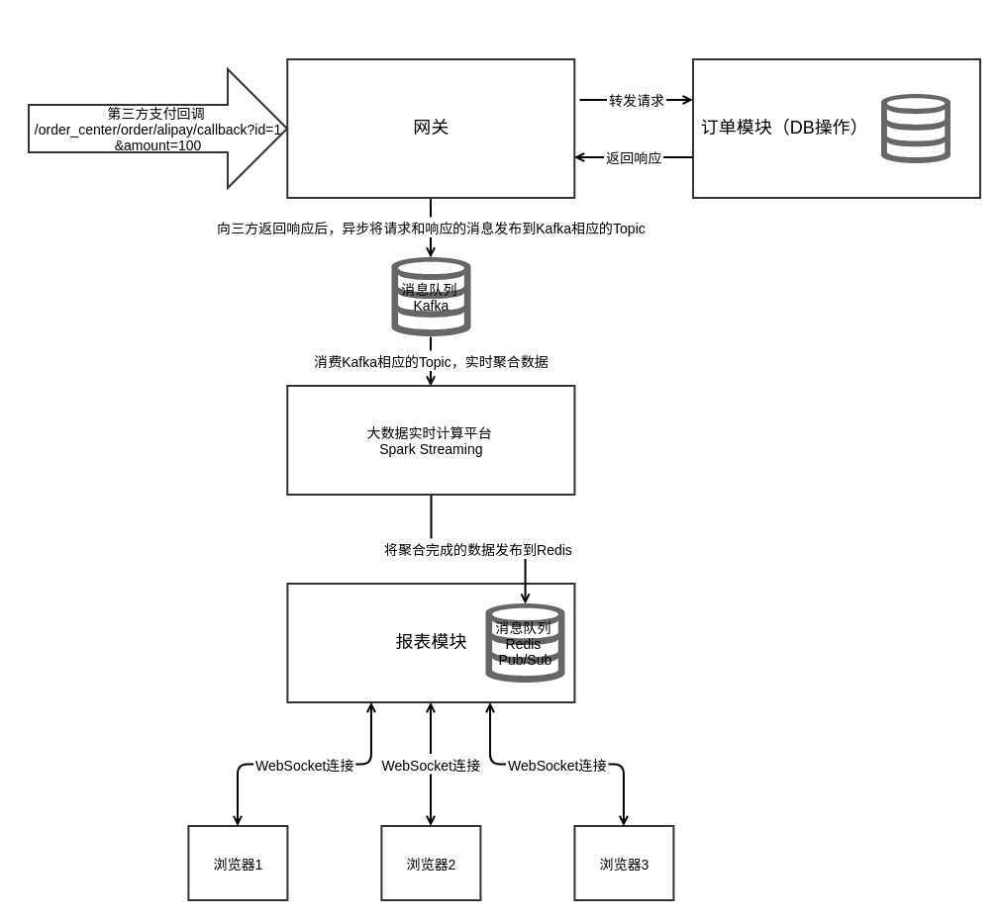

tornado WebSocket example
WebSocket status :
以下表格的内容通过Websocket进行更新
REST API示例
- id为1的订单支付成功，支付金额101
- curl "http://localhost:8888/order_center/order/alipay/callback?id=1&value=101"
- id为2的订单支付成功，支付金额300
- curl "http://localhost:8888/order_center/order/alipay/callback?id=2&value=300"
